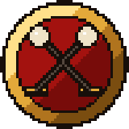

Open MortalArcade
The real 2004 OpenMortal, running in your browser. Put yourself in the game, then settle it on the big screen.

The real 2004 OpenMortal, running in your browser. Put yourself in the game, then settle it on the big screen.